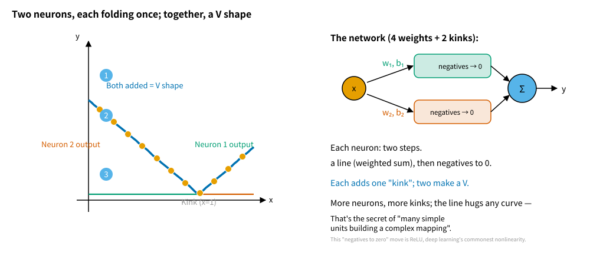
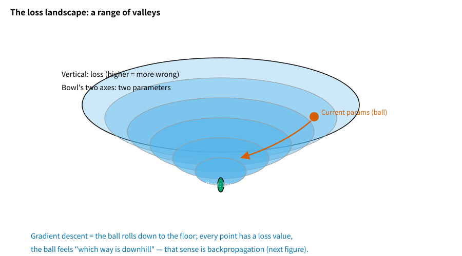
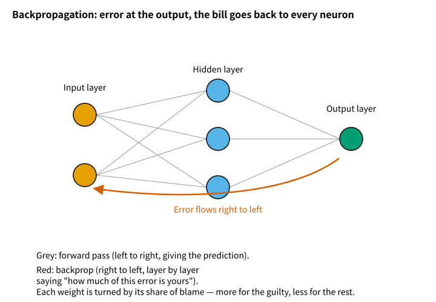
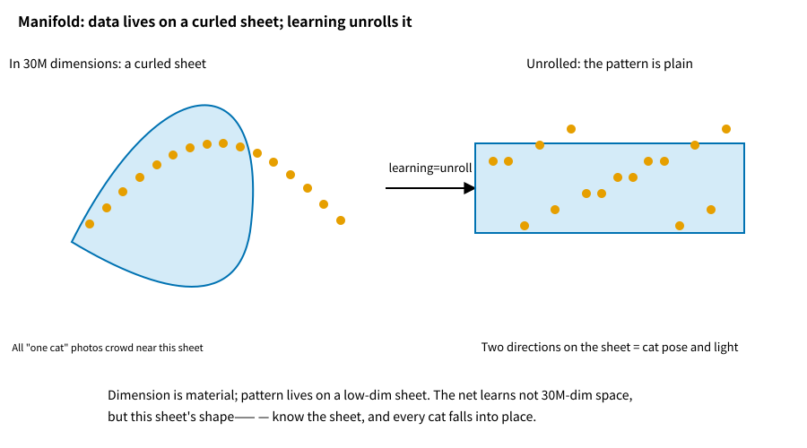

1.3.3 Learning
Finding patterns in high dimensions: how a neural network learns¶
The one-line intuition¶
Learning is turning knobs: a network holds anywhere from a few million to a few hundred billion parameters (Section 1.3.1 counted them), each one a knob. At the start of training they're all turned at random and the network talks nonsense; then you do the same thing over and over — look at a batch of examples, measure how badly it's getting things wrong, and nudge every knob a little way towards "less wrong". A few million rounds later, the combination of knob positions starts producing correct answers.
No inspiration, no epiphany, just those two moves — measure the error, turn the knobs — repeated a few million times.
An analogy: tuning blindfolded¶
Imagine tuning an old radio with two hundred knobs while blindfolded, with the goal of hearing a clean jazz station. You can't see the knobs, but you can hear how loud the static is. There's only one strategy: nudge each knob a little, listen to whether the static got louder or quieter, and keep turning in whichever direction made it quieter. Two hundred knobs in turn, and after a few dozen rounds the music surfaces.
"Hearing whether the static went up or down" is the loss function; "turning towards less static" is gradient descent. The only difference is that a neural network's two hundred knobs affect each other, and there are tens of billions of them.
The problem it solves¶
Section 1.3.1 left two loose ends: the XOR wall gets climbed by "adding a few more neurons", but nobody knew how to get each one to tune its own weights. This section is the answer.
Start with the simplest case: two neurons, one kinked line¶
The cheapest way into "learning" is a "mini network" with only four weights: give it a pile of orange data points and ask it to draw the line through them (Figure 1-15).
There are only two neurons in it. Section 1.3.1 said each neuron does two things: first compute a straight line (the weighted sum), then pass the result through a nonlinearity. The most common one is astonishingly plain — flatten negatives to zero: any negative number becomes 0, positive numbers pass through unchanged. Its only effect is to "fold" the line at zero, creating a kink.
And so it fits together: each neuron contributes one kink. Two neurons, two kinks, and together they make a V-shaped line assembled from two straight segments — in Figure 1-15 the two coloured kinked lines add up to the blue V, and the orange data points sit on it. Take it to ten neurons and you have ten kinks; take it to a few hundred and the kinks are too dense to see, and the line can hug any curve at all.

This is the smallest version of "finding patterns in high dimensions": the pattern is that line — it passes through every point it was taught, and its kinks imitate every bend in the data. A real network scales the game up by a billion: the input is a 784-dimensional vector, the "line" is a folded surface in thirty-million-dimensional space, but "each neuron folds once, and the sum assembles a complex mapping" needs not one word changed.
And while we're here, see its limit plainly: no matter how many kinks, it's only imitating the trend from point to point. It's a parrot, imitating the patterns it has seen beautifully and knowing nothing beyond them — and that parrot comes back in Section 1.6 (the seed of hallucination gets planted right here).
The key moves come in three steps, each with a figure.
Step one: give "badly wrong" a number. The network takes a training example, computes a prediction, subtracts it from the ground truth, squares, averages — and gets a single number, the loss. Big loss = badly wrong; small loss = close to correct. All of training is about making that number smaller.
Step two: find downhill in "knob space". Treat every parameter as an axis, and the loss becomes the height of that high-dimensional space — together, a rolling surface (the figure below draws a miniature of it with two parameters). The rule of gradient descent is one plain sentence: work out the steepest downhill direction from where you are, take a small step that way, repeat. The size of that "small step" is the learning rate — too big and you leap clean over the valley floor and bounce back and forth, too small and you'll never get there in a hundred years.

Step three: work out which way each knob should turn. With tens of millions of parameters on the surface, how do you know the "steepest downhill"? That's the gift of backpropagation in 1986[12]: first compute the prediction forwards (grey line), then start from the error at the output layer and split the bill layer by layer from right to left (red line) — each weight is told "how much of this error is your responsibility", and the ones with more responsibility get turned further, the ones with less get turned less (the figure below). One chain rule, and the direction for tens of billions of knobs is worked out in a single pass.

One run through all three steps is called an iteration. After a few billion iterations, the little 26-knob network from Section 1.3.1 classifies correctly, and the same mechanism scaled up ten thousandfold is what LeCun and colleagues had in their earliest convolutional networks[13] and what underlies every large model today.
Finding patterns in high dimensions: the data lives on a sheet of paper¶
One puzzle is left: thirty-million-dimensional space is so empty, how could a few hundred cat photos teach a network to recognise cats?
Because data doesn't fill the space. All the ways one "photo of a cat" differs from another — angle, lighting, distance, pose — have only a handful of degrees of freedom, so in thirty-million-dimensional space they cluster on a curved, low-dimensional sheet, and that sheet is called a manifold[14]. Learning is getting to know the shape of that sheet: unroll the curled-up parts, pull the same class together and push different classes apart (the figure below).

That also explains why "high-dimensional" isn't as scary as it sounds: dimension is the raw material of representation; the pattern lives on a low-dimensional manifold. How well a network learns depends on whether it can follow the sheet the data actually sits on, rather than being led astray into the empty regions of the space.
Built-in limitations: gradient descent only guarantees "better", not "right"¶
Downhill on that surface has three kinds of pit. Local pits: land in a small dip and everything around is uphill, so the robot thinks it has hit the valley floor — luckily, real local minima in high dimensions are far rarer than two-dimensional intuition suggests. Overfitting: learning the training data off by heart, loss falling all the way, then falling apart on a new example — how to spot and prevent that is the star of Section 1.4.3. Data hunger: the more parameters, the more examples you have to feed it, or the knobs memorise each sample instead of the pattern.
Common misconceptions
That a neural network "learns like a brain". Real training is a numerical optimisation machine: loss function, gradient, update, every step deterministic arithmetic. The brain gives it only the inspiration (the three-step structure of Section 1.3.1); the learning itself is entirely engineering. By the same token, "the network figured it out" has no counterpart either — it's just that after some iteration, the loss happened to drop to a particular place.
Summary and self-check¶
Three sentences: the loss function turns "badly wrong" into a number; gradient descent turns the knobs along the steepest downhill; backpropagation splits the error bill back to every weight across the network. Learning has no flash of insight, only a few million rounds of "measure the error, turn the knobs" — and a trained network is essentially a parrot: imitating the patterns it has seen beautifully.
Two self-check questions:
- What happens if you set the learning rate ten times higher? And a tenth of that? (Hint: imagine the step size on the figure above.)
- Why can "a few dozen cat photos" teach a model to recognise cats, while "a few dozen calculus problems" can't teach a model calculus? (Hint: manifolds.)
Maths note. Write the prediction as \(\hat{y}\) and the ground truth as \(y\); the mean squared error loss is:
The "fold" of each neuron is just \(h = \max(0,\, wx+b)\) ("flatten negatives to zero"), after which the various \(h\) are summed with weights.
The gradient descent update is: \(\theta \leftarrow \theta - \eta \nabla L\), where \(\theta\) is all the parameters, \(\eta\) is the learning rate, and \(\nabla L\) is the gradient of the loss with respect to each parameter (the "steepest downhill direction"). Backpropagation is simply using the chain rule to compute every component of \(\nabla L\) in one pass.